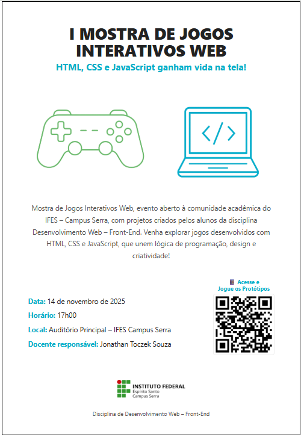

Jonathan Toczek


Professor de Informática e Automação atuando no Ifes desde 2006, passando pelos Campus Cachoeiro, Guarapari e atualmente no Campus Serra. Foi membro fundador do curso Técnico em Informática e do curso Integrado em Informática do Campus Cachoeiro. Foi membro idealizador, fundador e Coordenador do Curso de Licenciatura em Informática EaD/UAB do Campus Cachoeiro. Foi membro idealizador e fundador do Curso Técnico em Administração EaD/e-Tec do Campus Guarapari. Presidente do NTE Serra (Núcleo de Tecnologias Educacionais).
Conheça o IFES Campus Serra

Eventos realizados
Para sugestões, clique aqui.
Email: jonathan@ifes.edu.br